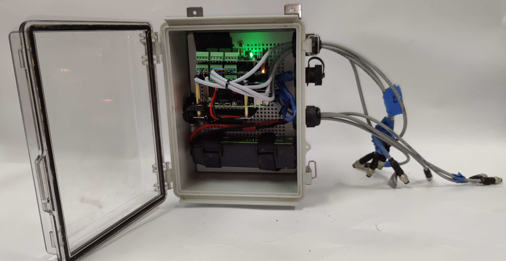
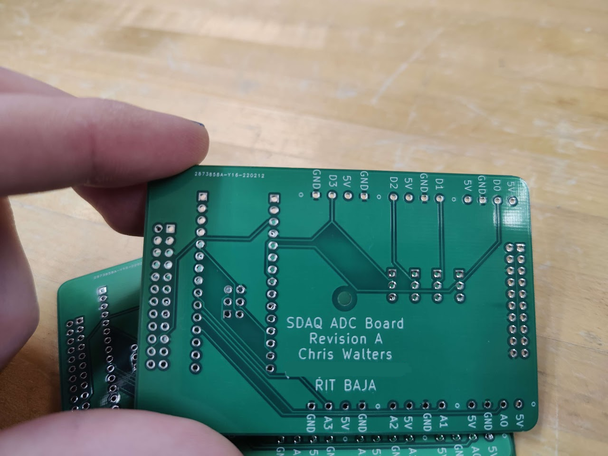
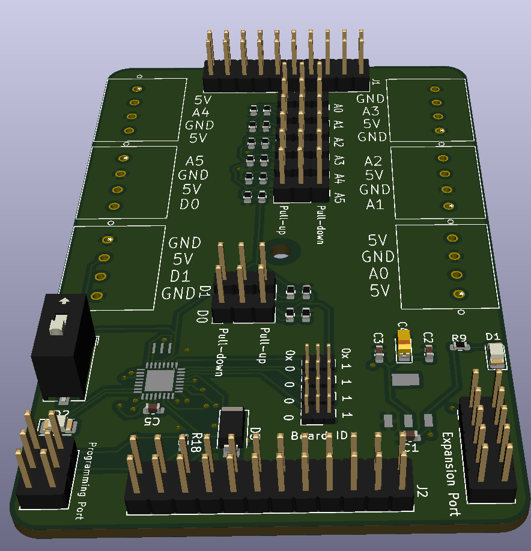

The SDAQ
The "Stackable Data AQuisitions system." ATMEGAs on sub-boards collect data from various sensors and relay it to a central Raspberry Pi for storage and interfacing. Created for the RIT Baja SAE team for their 2022 season.
The second image shows revision A, where an Arduino Nano slots in to two rows of headers added onto the board. The third image shows revision B, which directly has the ATmega328 and its supporting components directly on the board, improving packaging.
The enclosure is ruggid and watertight, allowing the SDAQ to collect data during RIT Baja's mock endurance event, where the car is ran around our test track for 4 hours. Users are able to connect to the Raspberry Pi through either wired ethernet or wifi connection.
  School Projects
Eagle Scout Project
For my town's American Legion, I led a project to restore poles around town that were dedicated to veterans that had lived there. The project was completed during the summer of 201X.